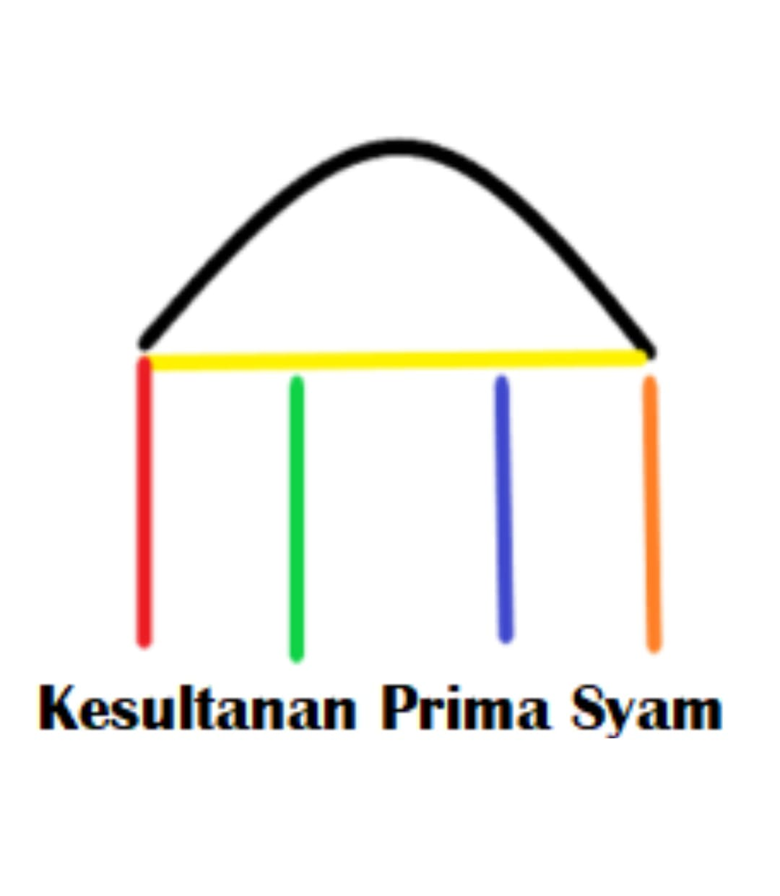
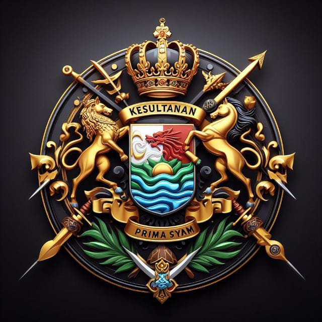

Symbols of the Kingdom of Prima Syam
Pillar Emblem (Six-Color Palace)

This emblem represents the digital foundation of the Kingdom, shaped like a palace roof and six pillars. Each pillar is symbolically tied to a royal figure:
- YMTS (Black): The roof – protection and authority.
- YMR (Yellow/Gold): Framework – nobility and justice.
- YMP Cahaya (Red): Strength and leadership.
- YMP Mutia (Green): Calmness and harmony.
- YMP Aisyah (Blue): Compassion and gentleness.
- YMP Imam (Orange): Islamic spiritual guidance.
Coat of Arms

The royal Coat of Arms includes:
- A crown symbolizing monarchy
- Lion and horse for guardianship
- Waves and sun for prosperity and peace
- Swords and scroll for wisdom and valor